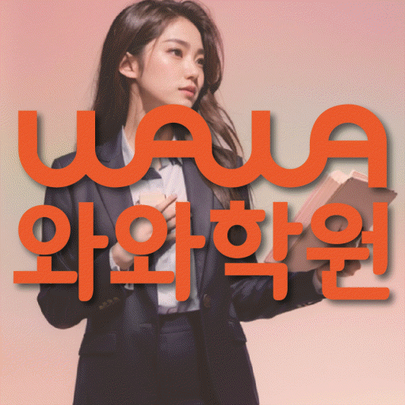
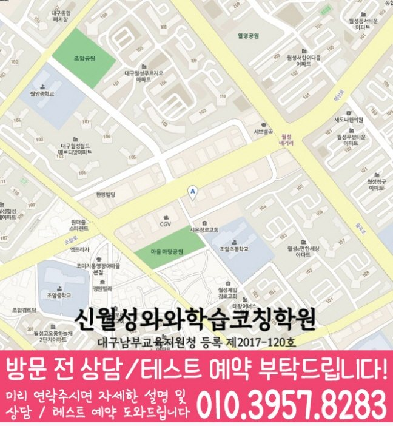

와와학습코칭센터 신월성점
대구 달서구 월성동 1848번지 그루타워 702호
GRADE 4 ENGLISH LOCAL GUIDE
와와학습코칭센터 신월성점의 위치와 과목별 가능 학년을 확인하고, 초4 영어 상담에 필요한 학교·학습 자료를 준비해 보세요.
와와학습코칭센터 신월성점의 영어 가능 학년 안내: 초4. 현재 수업 시간·반 편성·정원은 상담에서 확인해 주세요.
대구 달서구 월성동 1848번지 그루타워 702호
현재 반 편성과 시간표는 상담에서 확인
대구남부교육지원청 등록 제2017-120호
통합 상담 전화 010-6839-8283 · 문의할 때 와와학습코칭센터 신월성점과 학생의 학년을 말씀해 주세요.
교습비 자료의 과목·수업 시간·횟수와 별도 비용을 상담 내용과 함께 확인해 주세요.
방문 주소는 월성동 1848번지 그루타워 702호입니다. 추가 길 안내가 필요하면 방문 전에 통합 상담으로 확인해 주세요.
방문 주소: 대구 달서구 월성동 1848번지 그루타워 702호
평균 오픈 안내 평일 오후 3시 이후
주말 수업 안내 토요일
안내 자료의 운영 정보입니다. 현재 방문 시간과 과목별 반 편성은 예약할 때 확인해 주세요. 건물 내 상점과 시설 모습은 촬영·안내 시점에 따라 달라질 수 있습니다.


와와학습코칭센터 신월성점 방문을 문의할 때 학생의 학년과 희망 과목을 알려 주세요. 통합 상담 010-6839-8283
아래는 가정에서 활용하는 일반 학습 점검 예시입니다. 현재 학교·교재에서 배우는 내용에 해당할 때 활용하고, 아직 배우지 않은 내용은 현재 진도에 맞춰 확인해 주세요. 학생의 학습 수준과 센터의 실제 수업 구성은 상담에서 확인할 수 있습니다.
질문이 이름, 장소, 수 중 무엇을 묻는지 구별할 수 있나요?
직접 확인할 예 Where is my book?에 On the desk.라고 답하면 책의 위치를 알려 줍니다. 질문에 필요한 정보와 답이 맞는지 그림으로 확인해 보세요.
하나와 여러 개를 나타내는 표현을 교재 문장에서 찾아보았나요?
직접 확인할 예 one apple과 two apples를 비교해 보세요. 수와 낱말의 끝부분을 함께 보고, 다른 낱말도 현재 교재에서 찾아 적어 보세요.
앞 문장에 이어질 답을 상황을 생각하며 골랐나요?
직접 확인할 예 Can I use your pen?에 Sure.라고 답하면 펜을 써도 된다는 뜻입니다. 요청과 허락을 나누어 표시해 보세요.
틀린 문항의 근거 문장, 모르는 낱말, 읽기 어려운 구문을 나누어 적어 보세요. 정답만 베끼지 말고 오답을 고른 이유와 다시 읽어 찾은 근거를 짧게 기록해 주세요.
교재 이름·쪽수와 혼자 해결한 부분을 함께 표시하면 상담에서 현재 학습 상태를 설명하기 쉽습니다.
제공 자료의 초등학교 참고 목록: 대구감천초등학교, 대구송일초등학교, 대구신월초등학교, 대구월성초등학교, 대구월암초등학교, 대구조암초등학교, 대구학산초등학교.
학교 목록은 지역 참고 자료입니다. 해당 학교별 반 운영이나 시험 대비 수업을 확인한 정보는 아닙니다. 학생이 사용하는 교재, 실제 과목명·진도, 시험 범위 안내와 최근 오답을 준비해 주세요.
읽기·어휘·문장 쓰기 중 먼저 점검할 부분, 독해 답의 근거를 확인하는 방법, 고친 문장을 다시 확인하는 방법을 질문해 보세요.
위의 센터 정보에 적힌 가능 학년을 확인하고 현재 시간표·반 편성·과목 범위를 문의해 주세요. 이 질문과 학습 예시는 센터의 확정된 수업 방식이나 제공 서비스를 뜻하지 않습니다.
와와학습코칭센터 신월성점의 영어 가능 학년 안내: 초4. 현재 수업 시간·반 편성·정원은 상담에서 확인해 주세요.
학교 참고 목록은 대구감천초등학교, 대구송일초등학교, 대구신월초등학교, 대구월성초등학교, 대구월암초등학교, 대구조암초등학교, 대구학산초등학교입니다. 학교별 전용 반 개설 여부는 별도로 확인해 주세요. 재학 학교와 학년을 알려 주고 학교 학습지, 단원평가 자료와 사용하는 교재를 바탕으로 상담할 수 있습니다.
상담 항목을 정리하는 초4 영어 상담에서는 맞고 틀린 결과보다 학생이 받은 설명과 다음 행동이 분명한지 확인하세요. 학습 기록에 ‘새 단어 세 개를 골라 교과서와 다른 짧은 문장에 적용해 보기’의 실행 여부와 다음 확인일을 함께 남기면 가정에서도 흐름을 살펴볼 수 있습니다.
센터의 교습비 자료와 상담에서 과목·횟수·수업 시간을 대조해 주세요. 교재비 등 별도 비용, 결석 시 보강 기준과 과제 피드백 방식도 함께 확인하면 좋습니다.
CONSULTATION SCENARIO
아래 두 장면은 초4 영어 상담 전에 준비할 자료와 질문을 정리한 점검 예시입니다.
가정 상담 장면: 월성동의 한 학부모가 최근 자료 가운데 문법의 문장 적용에서 막힌 문제와 누적 오답과 복습 계획 관련 학습 기록을 나눠 가져오고, 초4 영어 상담에서 제안받을 첫 주 확인 항목과 다음 점검일을 질문하는 상황을 가정할 수 있습니다. 이 초4 영어 상담 장면은 실제 이용 후기나 특정 학생의 성과가 아니며, 상담 준비용 가상 예시입니다. 월성동에서 초4 영어를 공부하는 학생의 학습 결과는 출발점과 실천 정도에 따라 달라질 수 있습니다.
비교 상담 장면: 월성동에서 초4 영어를 공부하는 학생의 학교 일정과 통학 가능 시간을 적어 두고 와와학습코칭센터 신월성점에서 문맥 속 어휘 관련 기록을 확인하는 방식, 과제 조절 기준, 학부모 공유 항목을 묻는 장면을 생각해 볼 수 있습니다. 이 초4 영어 상담 장면에서 비교할 항목은 학생의 실제 자료와 가능한 일정에 맞춰 조정해야 합니다.



와와학습코칭센터 신월성점의 위치와 월성동 생활권을 기준으로 초4 영어 상담 정보를 확인합니다. 방문 전 실제 이동 동선과 상담 가능 시간을 함께 확인해 주세요.